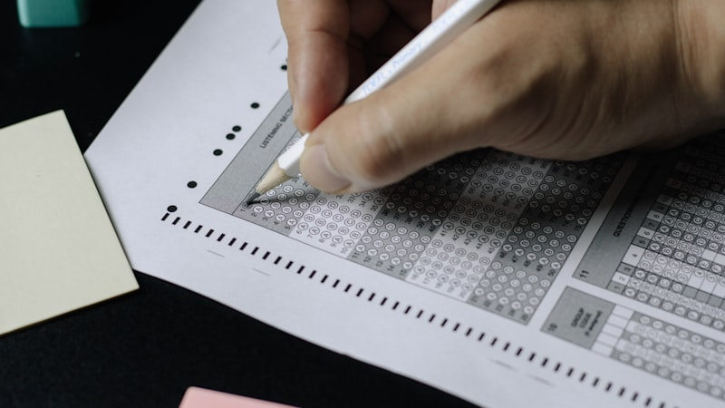

시험이 끝나고 나면 뒤쪽 세 문제가 백지입니다. 몰라서 비운 게 아니라 거기까지 가지도 못했습니다. 중간에서 한 문제에 붙잡혀 있다가 종이 쳤습니다. 대전 서구에서 고2 수학과외 상담을 받다 보면 이 이야기가 자주 나옵니다. 실력이 모자라서 깎인 점수가 아니라 순서 때문에 깎인 점수입니다. 그리고 순서는 실력보다 빨리 고쳐집니다.
한 문제에 붙잡히는 이유
- 여기까지 왔으니 아깝다는 마음 — 이미 5분을 썼으니 조금만 더 하면 될 것 같습니다. 그 "조금만"이 대개 또 5분입니다.
- 넘어가는 기준을 정해 두지 않았기 때문입니다 — 언제 손을 떼야 하는지 정해 두지 않으면, 시험장에서는 그 판단을 할 여유가 없습니다.
- 문제 순서를 출제 순서로 믿기 때문입니다 — 시험지는 쉬운 순서로 놓여 있지 않습니다. 중간에 배점 큰 문항이 들어가 있는 경우가 많습니다.
시험지에서 순서를 정하는 세 단계
문제를 더 빨리 푸는 훈련이 아니라, 어디에 시간을 줄지 미리 정해 두는 훈련입니다. 모의고사 한 회로 연습할 수 있습니다.
- 1단계 · 처음 2분은 풀지 않고 넘깁니다 — 시험지를 끝까지 넘기면서 배점과 문항 수만 확인합니다. 뒤에 무엇이 있는지 알고 시작하는 것과 모르고 시작하는 것은 완전히 다릅니다.
- 2단계 · 한 문제에 쓸 시간의 상한을 정합니다 — 예를 들어 "3분 안에 식이 안 서면 표시하고 넘긴다"로 정합니다. 숫자는 학생마다 다르게 잡되, 미리 정해 두는 것이 핵심입니다.
- 3단계 · 넘긴 문제는 표시를 남기고 한 바퀴 뒤에 돌아옵니다 — 한 바퀴를 돌고 오면 같은 문제가 다르게 보이는 경우가 많습니다. 머리가 쉬는 동안 정리되기 때문입니다.
이 연습을 서너 회 하면 오답 노트의 말이 바뀝니다. "시간이 없었다"에서 "12번에서 4분을 썼다"로 바뀌면, 다음 시험에서 고칠 지점이 보입니다.
2학기 중간고사까지 주차별로
- 1주차 — 시험 범위 유형을 훑으며 자신이 늘 오래 걸리는 유형을 세 개만 적어 둡니다
- 2주차 — 그 세 유형만 집중해서 풉니다. 시간을 줄이는 게 목표가 아니라 식이 서는지 아닌지를 빨리 판단하는 게 목표입니다
- 3주차 — 실제 시험 시간에 맞춰 한 세트를 풉니다. 넘긴 문항에 표시를 남깁니다
- 마지막 주 — 넘긴 문항만 모아 다시 풉니다. 여기서 맞는 문항이 시험에서 건질 수 있었던 점수입니다
시험 범위와 서술형 비중, 배점 구성은 학교와 학년마다 다릅니다. 정확한 내용은 학교에서 안내하는 평가 계획을 확인하시는 것이 가장 정확합니다.
대전 서구는 방문 수업이 가능합니다
대전 서구로 직접 찾아갈 수 있는 선생님은 3명이고, 세 분 모두 수학을 가르칩니다. 둔산동·괴정동·도마동처럼 학원가에서 가까운 동네라도, 저녁에 오가는 시간을 아껴 한 시간을 더 쓰는 쪽이 낫다고 판단하시면 방문 수업이 맞습니다. 시간이 맞지 않으면 화상 수업도 선택할 수 있습니다. 화면을 공유해 풀이를 함께 보기 때문에 위에 적은 세 단계를 그대로 수업 안에서 할 수 있습니다.
💡 티칭코칭은 대전 서구 서대전고등학교 학생에게 맞춘 1:1 고2 수학과외를 방문·화상으로 제공합니다. 상담은 무료입니다.
👉 서대전고등학교 학교별 과외 안내 · 대전 서구 수학과외 선생님 · 대전 서구 지역 과외 안내